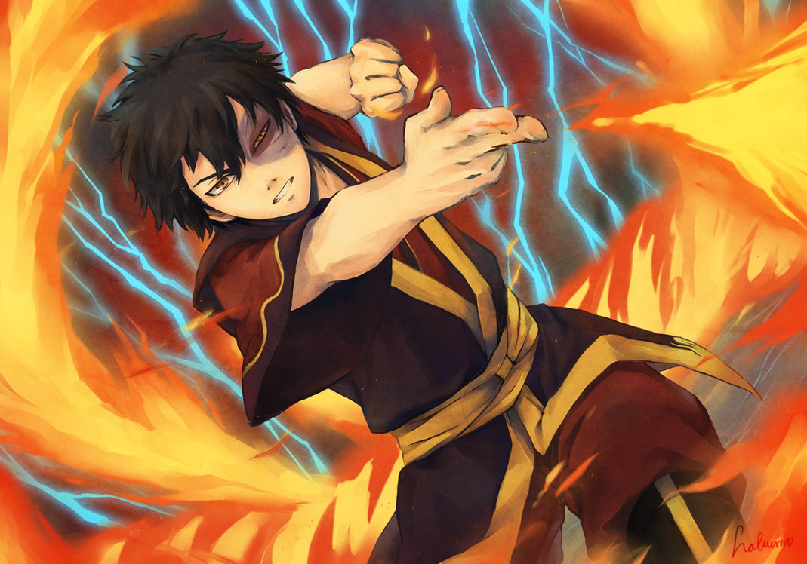

Es una niña de 12 años, una habilidosa maestra tierra, ciega de nacimiento. Proviene del Reino Tierra, y pertenece a una familia importante de su Nación. Toph, deja todas las comodidades de su hogar para acompañar a Aang en su viaje y enseñarle Tierra control.
El hecho de ser ciega hace que haya desarrollado la habilidad de sentir las vibraciones del suelo, lo que le permite saber con exactitud, en que posición se encuentran las personas, siempre en cuando todo esté en contacto con tierra con sus pies. Además, aprendió la habilidad de controlar el metal (Metal control). Aunque ha demostrado ser capaz de "ver" a través de la tierra que toca sus pies, le cuesta ver a través de la arena.
Aang |
Soka |
Katara |
Zuko |